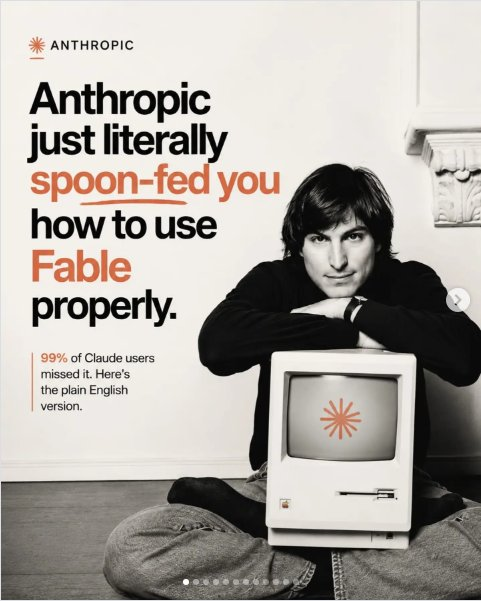
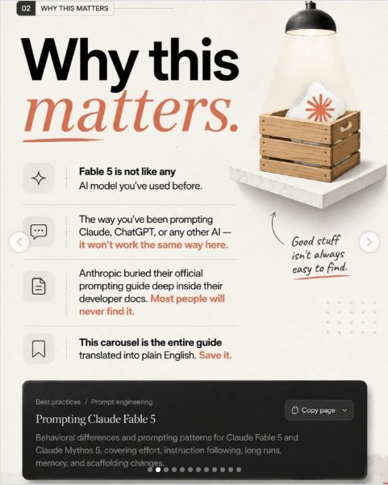
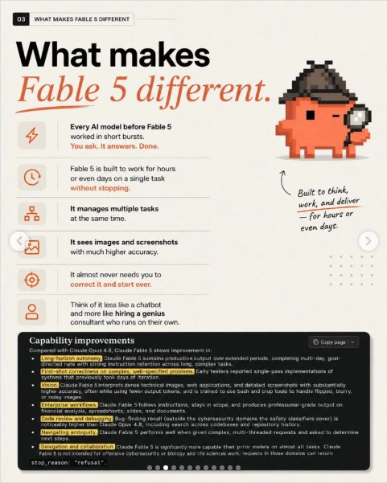
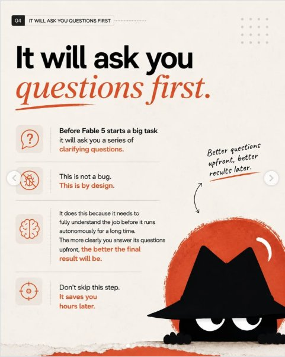
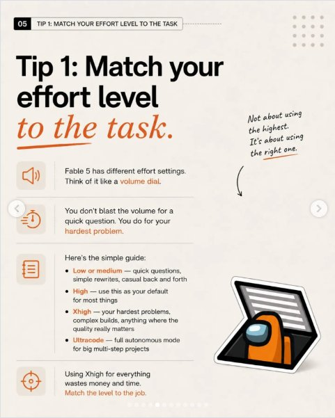
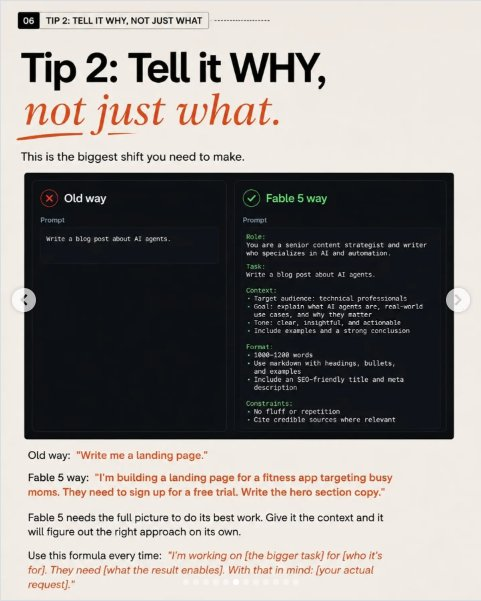
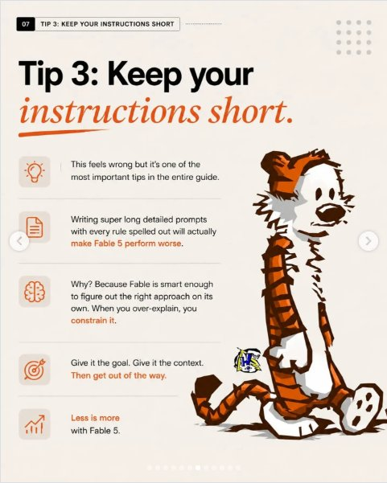
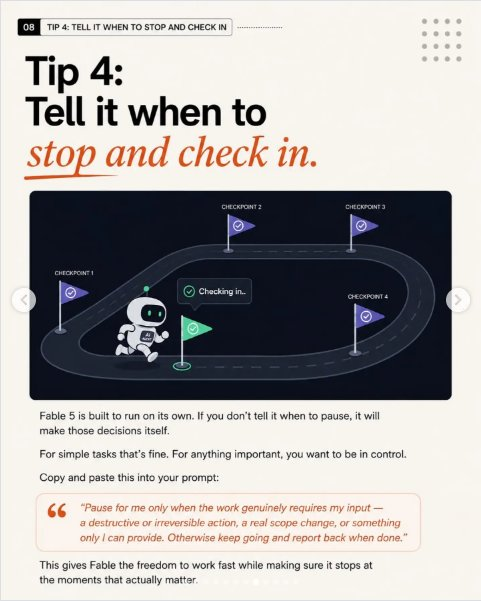
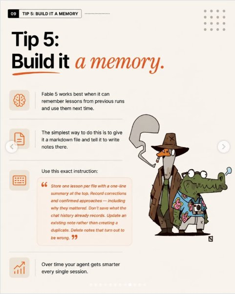
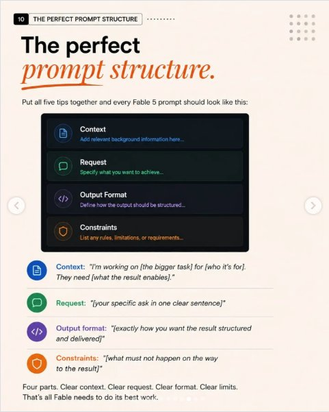

Instagram Post

Comment “SEND” I will send you the link!
carousel (10 slides) (enriched by ClaudeClaw)
Summary
Anthropic Anthropic just literally spoon-fed you how to u... | 02 WHY THIS MATTERS Why this matters | 03 WHAT MAKES FABLE 5 DIFFERENT What makes Fable 5 different | 04 IT WILL ASK YOU QUESTIONS FIRST It will ask you questi... | 05 TIP 1: MATCH YOUR EFFORT LEVEL TO THE TASK Tip 1: Matc... | 06 TIP 2: TELL IT WHY, NOT JUST WHAT Tip 2: Tell it WHY, ... | 07 TIP 3: KEEP YOUR INSTRUCTIONS SHORT Tip ...
Caption
Comment “SEND” I will send you the link!
.
.
.
.
#openclaw #ai #claude #aiagents
1
Anthropic Anthropic just literally spoon-fed you how to use Fable properly. 99% of Claude users missed it. Here's the plain English version.
A black and white photo shows a young Steve Jobs sitting cross-legged on the floor, leaning on a vintage Macintosh computer that displays an orange starburst logo on its screen.
2
02 WHY THIS MATTERS Why this matters. Fable 5 is not like any AI model you've used before. The way you've been prompting Claude, ChatGPT, or any other AI — it won't work the same way here. Good stuff isn't always easy to find. Anthropic buried their official prompting guide deep inside their developer docs. Most people will never find it. This carousel is the entire guide translated into plain English. Save it. Best practices / Prompt engineering Copy page Prompting Claude Fable 5 Behavioral differences and prompting patterns for Claude Fable 5 and Claude Mythos 5, covering effort, instruction following, long runs, memory, and scaffolding changes.
A digital slide or infographic presents text about AI prompting, featuring a spotlight illuminating a wooden crate with a pillow on a white shelf.
3
03 WHAT MAKES FABLE 5 DIFFERENT What makes Fable 5 different. Built to think, work, and deliver - for hours or even days. Every AI
4
04 IT WILL ASK YOU QUESTIONS FIRST It will ask you questions first. Before Fable 5 starts a big task it will ask you a series of clarifying questions. This is not a bug. This is by design. It does this because it needs to fully understand the job before it runs autonomously for a long time. The more clearly you answer its questions upfront, the better the final result will be. Don't skip this step. It saves you hours later. Better questions upfront, better results later.
An infographic slide explains a process of asking clarifying questions first, featuring a cartoon character in a black fedora hat peeking from the bottom right corner.
5
05 TIP 1: MATCH YOUR EFFORT LEVEL TO THE TASK Tip 1: Match your effort level to the task. Not about using the highest. It's about using the right one. Fable 5 has different effort settings. Think of it like a volume dial. You don't blast the volume for a quick question. You do for your hardest problem. Here's the simple guide: Low or medium — quick questions, simple rewrites, casual back and forth High — use this as your default for most things Xhigh — your hardest problems, complex builds, anything where the quality really matters Ultracode — full autonomous mode for big multi-step projects Using Xhigh for everything wastes money and time. Match the level to the job.
An infographic slide presents "Tip 1: Match your effort level to the task" with explanatory text, icons, and an illustration of an orange Among Us character inside a laptop.
6
06 TIP 2: TELL IT WHY, NOT JUST WHAT Tip 2: Tell it WHY, not just what. This is the biggest shift you need to make. Old way Prompt Write a blog post about AI agents. Fable 5 way Prompt Role: You are a senior content strategist and writer who
7
07 TIP 3: KEEP YOUR INSTRUCTIONS SHORT Tip 3: Keep your instructions short. This feels wrong but it's one of the most important tips in the entire guide. Writing super long detailed prompts with every rule spelled out will actually make Fable 5 perform worse. Why? Because Fable is smart enough to figure out the right approach on its own. When you over-explain, you constrain it. Give it the goal. Give it the context. Then get out of the way. Less is more with Fable 5.
An infographic slide with a light background features a large title about keeping instructions short, accompanied by five bullet points with icons explaining the concept, and a cartoon illustration of Hobbes the tiger sitting on the right side.
8
08 TIP 4: TELL IT WHEN TO STOP AND CHECK IN Tip 4: Tell it when to stop and check in. CHECKPOINT 2 CHECKPOINT 3 CHECKPOINT 1 Checking in.. AI Fable 5 is built to run on its own. If you don't tell it when to pause, it will make those decisions itself. For simple tasks that's fine. For anything important, you want to be in control. Copy and paste this into your prompt: “Pause for me only when the work genuinely requires my input — a destructive or irreversible action, a real scope change, or something only I can provide. Otherwise keep going and report back when done.” CHECKPOINT 4 This gives Fable the freedom to work fast while making sure it stops at the moments that actually matter.
An infographic shows a white robot running on a dark track with four checkpoints marked by flags, illustrating a concept about pausing and checking in.
9
09 TIP 5: BUILD IT A MEMORY Tip 5: Build it a memory. Fable 5 works best when it can remember lessons from previous runs and use them next time. The simplest way to do this is to give it a markdown file and tell it to write notes there. Use this exact instruction: Store one lesson per file with a one-line summary at the top. Record corrections and confirmed approaches — including why they mattered. Don't save what the chat history already records. Update an existing note rather than creating a duplicate. Delete notes that turn out to be wrong. Over time your agent gets smarter every single session.
An infographic slide features text about building memory for an agent, accompanied by a cartoon illustration of a goose detective smoking a cigarette next to an alligator wearing a Hawaiian shirt and holding a camera.
10
10 THE PERFECT PROMPT STRUCTURE The perfect prompt structure. Put all five tips together and every Fable 5 prompt should look like this: Context Add relevant background information here... Request Specify what you want to achieve... Output Format Define how the output should be structured... Constraints List any rules, limitations, or requirements... Context: "I'm working on [the bigger task] for [who it's for]. They need [what the result enables]." Request: "[your specific ask in one clear sentence]" Output format: "[exactly how you want the result structured and delivered]" Constraints: "[what must not happen on the way to the result]" Four parts. Clear context. Clear request. Clear format. Clear limits. That's all Fable needs to do its best work.
The image displays a presentation slide titled "The perfect prompt structure," outlining a four-part framework for crafting prompts with definitions and example sentences.
All slides








